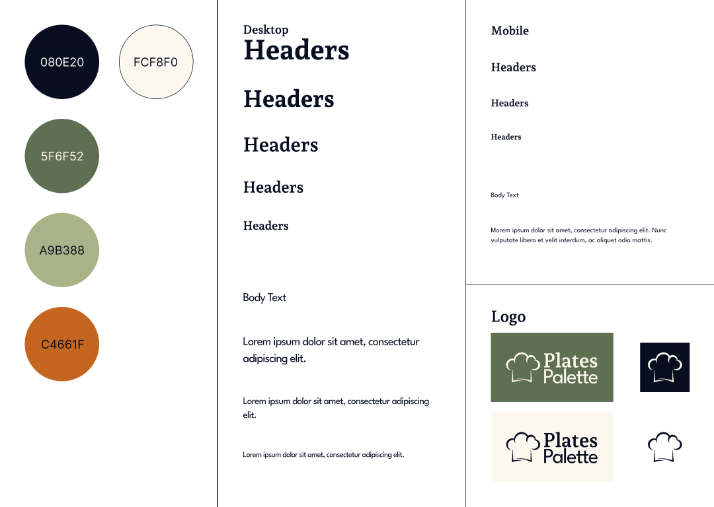

Over the course of 11 weeks, I designed and developed a custom web application that functions as an online cookbook. The goal was to create a functional and accessible website that showcased a library of recipes while providing users with tools to browse, search, and filter the content easily. The process included building a cohesive design system, developing a foundational template with HTML and CSS, organizing a database to store recipe details, and using PHP to inject dynamic content. A standout feature of the application is the search bar, which enables users to filter recipes by name, description, or ingredients. The final product is an intuitive, responsive, and visually cohesive application that balances functionality with design.
In my IDM232 class, I worked on an 11-week project to create a custom web application featuring an online cookbook. The project involved designing a functional interface to display a library of recipes provided in PDF format, along with related images. I developed my own branded version of the application, incorporating features for browsing, searching, and filtering recipes. The focus was on building a tool that effectively presented the content while meeting usability goals.
For development, I used PHP for server-side functionality, MySQL for database management, and HTML and CSS for structuring and styling the application. I also relied on Git for version control throughout the project. This assignment allowed me to combine technical implementation with the principles of user-centered design, integrating programming knowledge with interface design to create a cohesive and practical application.
My primary goal for this project was to create a functional and accessible website that effectively displayed a library of recipes. I aimed to ensure that users could easily browse, and search through the content, making the website intuitive and user-friendly. At the same time, I wanted the design to be visually appealing, reflecting a cohesive brand identity that would enhance the overall user experience. Balancing technical functionality with an engaging interface was central to my approach, as I worked to create a tool that was both practical and enjoyable to use.
Building a design system for this project involved creating a cohesive set of design elements to ensure consistency across the application. I began by establishing a strong visual identity, which included selecting a color palette, typography, and iconography that reflected the branding of the cookbook. This step was crucial in setting the tone for the application. I also designed a logo that would serve as a central visual element, helping to reinforce the brand's personality and making the site instantly recognizable. With these foundational elements in place, I was able to develop a unified design system that would guide the look and feel of the entire application, ensuring a seamless user experience.
To begin developing the project, I first created an alpha version of the application using a basic template built with HTML and CSS. This allowed me to lay the foundation for the site's structure and design, ensuring the layout was clean and responsive. I focused on building the core pages, including the homepage, recipe listings, and individual recipe details, using static content as placeholders. This initial step helped me visualize how the final application would look and function. Once the template was complete, I prepared the structure to seamlessly integrate the database by creating placeholders for dynamic content, such as recipe titles, images, and descriptions. This alpha version acted as a blueprint, setting up the necessary structure before connecting the database to inject dynamic content.
After completing the alpha version, I organized the database by structuring a table to store recipe details, such as titles, ingredients, instructions, and associated images. I used MySQL to set up the database, ensuring each field was properly defined for efficient data storage and retrieval. Using PHP, I connected the database to the application, enabling dynamic content injection. I created an "All Recipes" page that pulled data from the database to display a list of recipes, dynamically loading titles, images, and summaries. To enhance usability, I implemented a functional search bar using PHP and SQL queries, allowing users to search for recipes by keywords. This process tied the front-end design to the back-end functionality, ensuring a seamless and interactive user experience.
The final design of my online cookbook showcases a clean, user-friendly interface that makes it easy to browse and discover recipes. At the heart of the application is the functional search bar, a key feature that allows users to filter through recipes by name, description, or ingredients. This search functionality streamlines the user experience by helping users quickly find what they are looking for, whether it's a specific dish or a recipe that includes a particular ingredient.
The navigation structure was designed with simplicity in mind, featuring an intuitive layout that guides users through the homepage, "All Recipes" page, and individual recipe views. Each recipe is displayed with clear imagery, concise descriptions, and organized details to ensure accessibility and readability. The site's design also prioritizes responsiveness, making it equally functional and visually appealing across desktop and mobile devices. These features, combined with a cohesive branding strategy, deliver a polished and practical application tailored to the needs of its users.
View my final project.
This project was a success in achieving its goals of creating a functional, accessible, and visually appealing online cookbook. The application's intuitive navigation, responsive design, and functional search bar effectively addressed the needs of users for browsing and filtering recipes. Feedback from users during informal testing was positive, emphasizing the ease of navigation and the search bar's ability to quickly deliver relevant results. From a technical standpoint, the application performed well, with efficient database queries and dynamic content loading, further validating its effectiveness.
One key lesson I learned was the importance of setting up a well-structured template before injecting the actual content. Developing the HTML and CSS foundation first allowed me to focus on creating a cohesive layout and design system without being overwhelmed by integrating dynamic features too early. This approach ensured a smoother transition to connecting the database and implementing functionality. Moving forward, I will continue to prioritize this step in my workflow, as it proved invaluable in maintaining clarity and organization throughout the project.